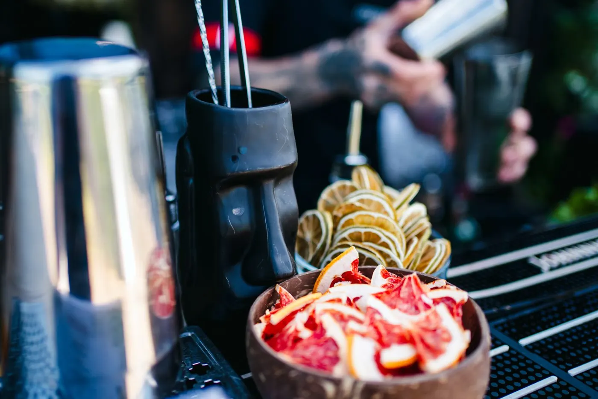

Botezuri · aniversări · majorate · petreceri acasă
Tu ești gazda. Noi suntem barul.
Fie că e botezul celui mic, a 40-a aniversare sau o petrecere în curte cu prietenii, venim cu barul, cocktailurile și barmanii, ca tu să stai cu invitații, nu la frigider.
Pentru orice ocazie
Mic sau mare, orice motiv e bun de sărbătorit
Botezuri
Cocktailuri pentru părinți și nași, variante fără alcool pentru cine conduce.
Aniversări
De la 30 de ani la 60, cu prietenii la bar toată seara.
Majorate
Show la bar, shoturi și cocktailuri fără alcool la fel de colorate.
Petreceri acasă
În curte, pe terasă sau în sufragerie. Avem nevoie doar de 2,5 × 2,5 metri.
All you can drink · exemple de preț
Cât costă barul la petrecerea ta
Preț fix pe invitat, băutură nelimitată din meniul ales. Staff-ul și copiii nu se numără.
Sau varianta cu băutura pe consum
Pachet barmani, de la 350 €
Potrivit pentru petrecerile unde crezi că nu se va consuma foarte mult. Plătești echipa la preț fix, iar băutura după cât se consumă, la prețurile BetaPlus, cu 8% reducere la bazele alcoolice.
- Barmanii și toate sculele de bar
- Taxa de vase a locației
- Toate cheltuielile de logistică
Băutura o aducem noi, prin furnizorul nostru, ca să putem răspunde de calitatea fiecărui pahar. Dacă preferi să asiguri băutura din altă sursă, o servim cu drag, cu un supliment de 30% la tariful serviciilor.
Vezi detaliile pachetului


Meniul 2026
Cocktailuri cu nume de filosofi, plus variante fără alcool
Platon, Erasmus, Harmony, clasicele pe care le știe toată lumea și patru cocktailuri fără alcool: Socrate, Tesla, Villalobos și Special Green Apple.
Întrebări de la gazde
Veniți și la petreceri mici?
Da. Prețul pe invitat e mai mare la grupurile mici, iar pentru petrecerile unde nu se bea mult, Pachetul barmani poate ieși mai avantajos.
Cine se numără la invitați?
Doar invitații adulți. Staff-ul și copiii nu intră în calcul.
De cât spațiu are nevoie barul?
De aproximativ 2,5 × 2,5 metri. Restul îl aducem noi.
Veniți și în afara Sibiului?
Da, venim oriunde, fără restricții.
Cum se plătește?
Avans 100 € la rezervare, iar restul după petrecere.
Hai să facem petrecerea!
Spune-ne ce sărbătorești, când și unde. Îți răspundem cu oferta potrivită.
Îți răspunde un om din echipă, nu un robot.
0743 785 655